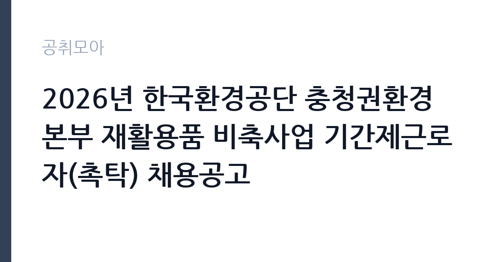

[공공기관] 2026년 한국환경공단 충청권환경본부 재활용품 비축사업 기간제근로자(촉탁) 채용공고
한국환경공단 · 충북 · 마감 2026-10-08 (D-17) · 출처 잡알리오

한눈에 보는 모집 조건
| 기관 | 한국환경공단 |
|---|---|
| 공고명 | 2026년 한국환경공단 충청권환경본부 재활용품 비축사업 기간제근로자(촉탁) 채용공고 |
| 고용형태 | 기간제 |
| 근무지 | 충북 |
| 게시일 | 2026-09-22 |
| 마감일 | 2026-10-08 (D-17) |
지원자격, 이렇게 읽으세요
- 공공기관 채용공시
- 세부 조건은 원문 공고문 확인
촉탁라급 기준으로 기사 자격증 하나면 지원이 가능하고, 산업기사는 2년 경력, 고졸은 3년 경력이 필요하다. 학사 학위 소지자도 지원할 수 있다. 전공 제한은 없는 것이 일반적이다. 함정은 임용 예정일부터 근무 가능해야 하고, 공무원 임용 대기나 취업 결정 상태에서는 응시할 수 없다는 점이다. 지게차 조작 분야가 포함된 경우에는 지게차운전기능사가 필수이므로, 본인 지원 분야의 자격 항목을 원문 공고문에서 확정해야 한다.
이 공고의 포인트
재활용품 비축사업은 환경공단의중에서도 현장이 강한 사업이다. 비축창고 운영과 입출고 관리, 민간 재활용업체와의 협업이일상이라 책상 앞 행정보다 현장 관리에 가깝다. 충북 권역 비축시설에서 일하므로 청주·충주 등 충북 거주자에게 출퇴근이 수월하다. 자원순환 정책의 최전선을 경험할 수 있다는 점이 경력 관점의 매력이다.
전형은 어떻게 진행되나
전형은 블라인드 방식의 서류전형과 면접전형으로 진행되는 것이 일반적이다. 서류에서는 채용 인원의 몇 배수를 뽑아 면접으로 넘기고, 면접에서 직무 적합성을 평가한다. 제출 서류는 응시원서와 자기소개서, 자격증과 경력증명서가 기본이다. 세부 배수와 일정, 접수 방법은 원문 공고문에서 확인해야 한다.
원문에서 확인한 전형 방식
가. 공통사항 ㅇ 한국환경공단 인사규정 제16조의 결격사유가 없는 자 ㅇ 공단 인사규정 제59조에 의거 영리업무 및 겸직근무자 제외 ㅇ 공직자윤리법 제17조 퇴직공직자의 취업제한에 해당되지 않는 자 ㅇ 임용예정일부터 근무가 가능한 자 ㅇ 공단 채용분야 자격기준에 해당하는 자(아래 응시자격 확인) ※ 공무원 임용대기, 기업 등 취업이 결정된 자 응시 불가(임용예정일 기준) 나. 촉탁라급 ㅇ 해당분야의 기사자격증 소지자 또는 산업기사 자격을 취득한 후 2년 이상 당해분야의 경력이 있는 자 ㅇ 고등학교 졸업(동등의 자격이 있다고 국가가 인정하는 경우를 포함한다)후 3년 이상 해당분야 경력이 있는 자 ㅇ 해당분야의 학사학위 소지자(졸업예정자 포함) 또는 전문학사 졸업 후 2년 이상 해당분야 경력이 있는 자 ※ 기술자격은「국가기술자격법」시행규칙 별표2에 따른 국가기술자격의 종목 중 채용분야와 관련되는 종목의 국가기술자격을 말함.
이런 분께 추천해요
- 환경·자원순환 분야 기사 자격을 가진 사람
- 지게차운전기능사 등 현장 자격과 창고·물류 관리 경험이 있는 사람
- 충북 거주로 비축시설 출퇴근이 가능하고 현장 업무를 선호하는 사람
지원 전 체크리스트
- 기사·산업기사·학력·경력 중 본인 해당 트랙을 확정한다
- 지원 분야가 지게차 조작이라면 지게차운전기능사 보유를 확인한다
- 임용대기·취업결정 상태가 아닌지, 임용일부터 근무 가능한지 점검한다
- 접수 마감일(10월 8일)과 접수 방법을 원문 공고문에서 확인한다
모집 일정과 제출 타이밍
접수는 2026년 10월 8일에 마감된다. 이후 서류와 면접을 거쳐 10월 중 임용되는 흐름이 일반적이다. 계약 기간은 사업 일정에 맞춰 정해지며, 비축사업의 특성상 연말까지 또는 사업 종료 시점까지인 경우가 많다. 정확한 계약 기간과 전형 일정은 원문 공고문에서 확인해야 한다.
직무 이해하기: 공공기관
비축사업 담당자는 재활용품 시장의 파수꾼 역할을 한다. 가격 동향을 모니터링하고 비축·방출 시점을 판단하는 행정 지원, 비축창고 입출고 관리와 재고 실사, 수탁업체와 지자체의 협업 조율이 주요 업무다. 지게차 조작 분야는 비축품의 하역과 적재를 직접 맡는다. 현장과 사무를 오가는 업무라 안전모를 쓰는 날도 많은 자리다.
자기소개서 작성 팁
자기소개서는 현장 경험을 중심으로 써야 한다. 창고 관리나 물류, 환경 시설 근무 경험을 구체적 수치(다룬 물량, 관리한 설비)와 함께 제시하는 것이 좋다. 자원순환 정책에 대한 관심을 밝히되, 거창한 구호보다 비축사업의 역할을 한 문장으로 정리하고 본인의 기여 방안을 잇는 구성이 설득력이 있다.
면접 준비 포인트
면접에서는 재활용품 시장 상황에 대한 질문이 나올 수 있다. 최근 폐지·폐플라스틱 가격 흐름과 비축사업의 필요성을 묻는 식이다. 현장 안전과 업체 협업 상황 질문도 단골이다. 지게차 분야는 안전 수칙과 작업 절차를 묻는다. 충북 근무 가능 여부와 계약직에 대한 인식도 확인하므로, 솔직하고 긍정적인 태도를 준비해야 한다.
급여·근무조건 읽는 법
정확한 보수액은 원문 공고문의 보수 항목에서 확인해야 한다. 환경공단 촉탁직은 공단 내부규정에 따른 보수를 받고 4대보험에 가입되는 구조가 일반적이다. 확정액 없이 과거 사례를 인용하지 않으며, 시간외수당과 여비 지급 여부도 원문에서 확인하기 바란다. 경쟁률과 합격선은 공개되지 않으므로 원문에서 확인해야 한다.
자주 묻는 질문
- 계약 기간은 어떻게 되나요?
기간제근로자로 계약 기간이 정해져 있으며 비축사업 일정과 연결된다. 정확한 기간과 연장 가능성은 원문 공고문의 근무조건 항목에서 확인해야 한다. - 전공 제한이 있나요?
과거 유사 공고에서는 해당 분야 전공 제한 없이 자격·경력 요건으로만 판단했다. 이번 공고의 전공 관련 조건은 원문에서 확인해야 한다. - 근무지는 충북 어디인가요?
충청권환경본부 관할의 충북 지역 비축시설 근무가 예정되어 있다. 세부 근무지는 원문 공고문에서 확인해야 한다.
함께 보면 좋은 공고
[공공기관] 한국토지주택공사 개방형 직위(감사실장, 준법감시관) 공모 — 마감 2026-10-07[공공기관] 한국도로공사 비상임이사 공모 — 마감 2026-09-29[공공기관] 2026년 하반기 2차 중소벤처기업진흥공단 체험형 청년인턴(장애인) 채용 공고 — 마감 2026-10-12출처: 잡알리오 공개정보를 바탕으로 공취모아가 정리한 안내글입니다. 모집 조건·일정은 변경될 수 있으니 지원 전 반드시 원문 공고문을 확인하세요. 본 글은 정보 제공용이며 합격을 보장하지 않습니다.